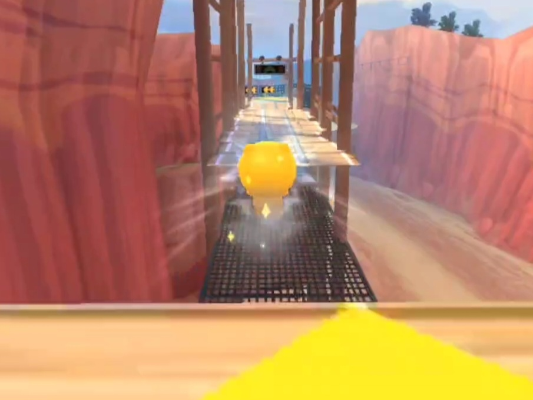
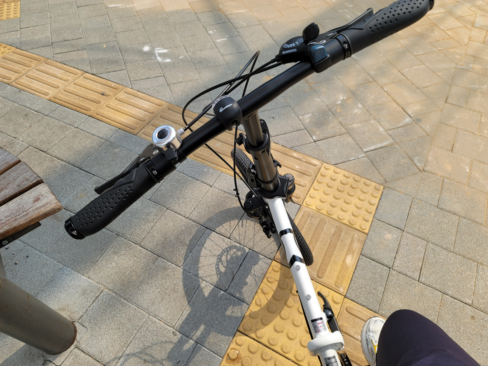

여행지에서 풍경을 보다 '내가 보는 이 풍경이 가상이라면 나무 하나하나가 몇 Byte고 물줄기는 어떻게 표현할까?' 라는 생각이 들었습니다. 가상이라도 보이는 무언가를 만든다는게 멋있게 느껴졌고 저 또한 그러한 일을 해보고 싶었습니다.
MBTI
작년까지는 ENFP였는데 12월의 어떤 일로 ENTP가 되어버렸습니다.
ENTP 지적도전을 즐기는 영리하고 호기심이 많은 사색가
⦁ 빠른 생각 을 하는 사람 – 토론자는 매우 유연한 마음을 가지고 있어 노력 없이 아이디어에서 아이디어로 전환할 수 있습니다.
⦁탁월한 브레인 스토머 – 토론자에게 최고의 솔루션을 찾기 위해 모든 각도에서 문제를 분석하는 것만큼 즐거운 일은 없습니다.
⦁ 활기참 – 이러한 특성을 결합하여 흥미로운 문제를 조사할 기회가 주어지면 토론자는 해결책을 찾기 위해 긴 밤낮을 가리지 않고 열정과 에너지가 정말 인상적입니다.
FAVOTITES
여행하기 & 사진찍기
여행을 떠나기 전의 그 설렘과 자유롭게 돌아다니며 낯선 사람들과 만나고 다양한 경험을 해보면 생각의 폭이 넓어지는게 제가 여행을 좋아하는 이유입니다. 돌아올때의 아쉬움또한 여행을 계속하고싶은 이유 중 하나네요. 여행지에서의 경험을 기억하고싶어 사진을 찍게 되었고 어느새인가 사진찍는것을 좋아하게 되었습니다.
⬅ 이미지를 누르면 사진이 바뀝니다.

게임하기
무언가 막히는게 있거나 스트레스 받을때 심심할때 가볍게 몇판 할수 있는 게임을 좋아합니다. 사람들과 협동하는 게임을 가장 좋아하고 머리를 쓰는 퍼즐,전략게임과 컨트롤하는 재미가 있는게임도 좋아해요. 요즘은 카트라이더를 즐겨합니다.
⬅ 이미지를 누르면 움직입니다.
영상편집
예전에는 게임을 하는것을 좋아했는데 작년 즈음부터 게임을 하는것이 아닌 게임을 만들어보고 싶어졌습니다. 하지만 단기간에 게임을 만들기는 힘들었고 게임관련 영상편집에 관심을 가졌습니다. 잠깐이었지만 게임 영상편집에 빠졌었는데 여전히 직접 개발해보고싶은 욕심이있었고 이 욕심이 결국 개발자가 되는 한걸음을 내딛는 계기중 하나가 된거같습니다.
영상은 제가 처음에 만들었던 영상입니다.

기타 좋아하는것들
게임을 좋아하지만 활동적인것도 좋아합니다. 자전거타고 멀리 돌아다니는 것을 좋아합니다. 요즘 실내운동은 암벽등반에 빠져있습니다. 가구나 기계를 조립하고 만드는걸 좋아해요. 멍멍이는 사랑입니다 너무 좋아요. 멍멍이를 위해서라면 인형뽑기같은 도박도 두렵지 않아요. 사실 오락실 인형뽑기 너무 좋아합니다^^.